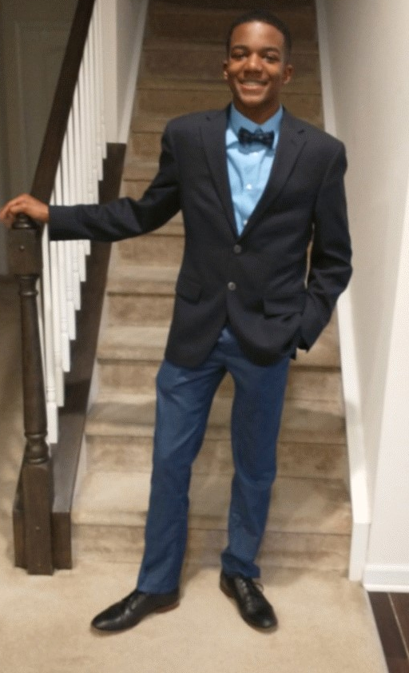

Welcome to my Hobby Site
WhoThis is a page about my hobbies, particularly gaming. I enjoy playing a variety of video games across different genres. Gaming allows me to unwind and immerse myself in different worlds and stories.
Who
I'm Marcus Ezell. I was born in North Carolina and have lived here for most of my life. I'm currently 21 years old. I moved to another school during my middle school years for better education.
What
I major in Computer Science and concentrate in AI, Robotics, and gameing.
HomepageWhen
I enjoy the Autumn season due to the chill season, special events such as thanksgiving, and I get to wear hoodies more often.
Where
The best locations I've been to were Tenessee, New Bern, and Myrtle Beach. I love being in the mountains, the beach, and seeing old town facilities that hold history of their whereabouts such as how Pepsi was created.
How
Why
AI Prompts
"make styling choices for a chill and laid back webpage for my styling tag."